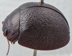
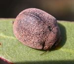
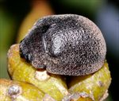
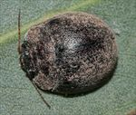
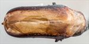
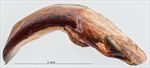
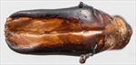
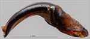
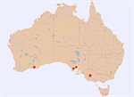

Click on images to enlarge


Male, Mitalie, Eyre Peninsula, South Australia


Female, Karkoo, Eyre Peninsula, South Australia


Female, Cleve, Eyre Peninsula, South Australia


Male, Esperance, Western Australia


Aedeagus, dorsal view (Nhill, Victoria)


Aedeagus, lateral view (Nhill, Victoria)


Aedeagus, dorsal view (Mitalie, Eyre Peninsula, South Australia)


Aedeagus, lateral view (Mitalie, Eyre Peninsula, South Australia)


Name
Trachymela alta (Blackburn)
Reference specimen
2017-167, Mitalie, Eyre Peninsula, South Australia.
Adult Description
Length: ♂ (6.8)7.0–8.1 mm (n=8), ♀ 7.6–8.4 mm (n=4).
Colouration:
- Head: Very dark reddish-brown, with clypeus and anterior of frons black, labrum black, mandibles black; antennomeres 1–3 yellow-brown, 4–6 grading darker brown, 7–11 dark brown, even darker at distal ends of each segment.
- Pronotum: Dark brown, concolorous with or fractionally darker than rear of head, lateral edge and part of anterior edge black.
- Scutellum: Black.
- Elytra: Very dark brown, concolorous with or slightly darker than disc of pronotum, often 5 fine longitudinal lines of a slightly paler brown shade on disc extend almost its full length, punctures concolorous with interstices, humeral callus black.
- Venter & Legs: Venter black, legs concolorous, inside surface of elytral epipleura black.
- Cuticular Wax: Light brown and evenly distributed, with very slightly higher concentration along 5 thin longitudinal lines on elytra on some individuals.
Morphology:
- Shape: Almost evenly rounded from scutellum to apex, strongly convex (H/BL: ♂ 0.45–0.51, ♀ 0.46–0.51), highest point some distance in front of elytral margin (PGH: ♂ 48–52% BL, ♀ 52–56% BL).
- Head: Punctures fine (pd ≈ 1.5–2.0 × ef) and quite evenly and densely distributed. Antennae moderately long (AL/BL: ♂ 40–44%, ♀ 35–38%), A4 ≈ A3, filiform.
- Pronotum: Almost evenly curved transversely, foveal depression present only as a barely noticeable depression in surface near anterior margin just behind inner edge of eye, a small, round elevation present in middle of foveal area, punctures on disc clearly impressed, similar in size to those on head, closely and rather evenly distributed together, punctures becoming considerably coarser from inside margin of foveal area towards lateral margin. Front margins join lateral margins in a smoothly rounded right-angle, with lateral margin initially almost straight for more than half of length, then curving smoothly and gradually towards the much thicker rear margin.
- Scutellum: Punctured, punctures as deeply impressed, large and dense as those on disc of pronotum.
- Elytra: Surface evenly curved, punctures very closely spaced but mostly poorly defined over almost whole of surface, obscured by the network of convex interstices that produce a rather finely granular appearance to the whole of elytral surface, a scatter of very fine punctures present on the interstices which are most evident around anterior half of elytral suture and on lateral margins, a very few small round verrucae, often with a puncture in the middle, are scattered around disc, but inconspicuous as they project no higher than most of the surrounding interstices, surface discontinuous under humeral callus. Vertical extension of epipleura considerable (HCE/PW = 0.35–0.40).
- Venter: Prosternal process narrowest anteriorly, closed anteriorly, short setae present sparsely over prosternal process and mesoventrite, one long seta on anterior and median trochanter, one on posterior trochanter; front edge of metaventrite beveled, truncate; inner edge of epipleura setose (often very sparsely) posteriorly, forward to about posterior edge of 1st abdominal segment, usually not extending fully to apex.
Male Genitalia (Aedeagus):
- Dimensions: Short (LPE/BL = 24.0–25.7%).
- Dorsal view: Shaft widest just anterior to basal sulcus, then narrowing slightly before sides become almost parallel and then widening almost imperceptibly to level of middle of ostium, from there the sides converge towards apex very gradually at first and then in an almost even and gradual arc, dorsal surface smoothly curved with a well-defined dorso-median channel extending almost to basal sulcus, dorsolateral channels relatively short, ostial opening in the shape of an oval that is slightly longer than wide with two dorsal ostial processes extending forward to spatula, spatula small, tip triangular.
- Lateral view: Shaft curved over about 75° near basal sulcus, then very gently and evenly curved to just before apex where curvature increases fractionally, tip deflexed.
Immature Stages
Unknown.
Similar species
- Ta123: This species is exceedingly difficult to distinguish from Ta116, also having thin longitudinal lines of more concentrated cuticular wax on the elytra (along with the corresponding lighter-coloured lines on the surface). Ta123 differs by the slightly rougher surface of the elytral disc, with granulations at less fine a scale, although this is a difficult character to define precisely. Ta123 has slightly shorter antennae in both sexes as well as having a smaller inter-antennal spacing. The aedeagus of the two species is similar in shape but that of Ta123 is much longer.
- Ta107: Another species that is almost impossible to distinguish from Ta116 but in the few specimens available does not have the longitudinal fine lines of concentrated wax on the elytra that is present in most specimens of Ta116. Its elytral surface is more like Ta123 than Ta107. The aedeagus of Ta107 is remarkably similar in shape and dimensions to that of Ta116 but the ostial processes are longer, extending apically to just in front of the apex of the spatulum.
- Ta124:
Notes
- Taxonomy: The identification of Ta116 as Trachymela alta (Blackburn) is by comparison with the type specimen in the Natural History Museum, London (BMNH), though that identification is somewhat tentative.
- Host Associations: In South Australia, specimens of Ta116 have been obtained from Eucalyptus gracilis and E. leptophylla (both Symphyomyrtus : Bisectae : Destitutae), with a single specimen from "E. foecunda" – most likely E. leptophylla (Symphyomyrtus : Bisectae : Destitutae), see Euclid, 2020. The Western Australian specimens were found on E. incrassata (Symphyomyrtus : Dumaria).
- Morphological Variation: There is almost no difference morphologically between the western and eastern populations, though the aedeagus of the Western Australian specimens is proportionally just slightly shorter than that of the South Australian specimens. Ta116 and Ta107 are very closely related species that are almost impossible to distinguish using external morphological characters. The aedeagus of the two species are almost identical in length and shape, but that of Ta107 has noticeably protruding dorsal ostial processes that extend to the tip while those of Ta116 are shorter.
Copyright © 2026. All rights reserved.